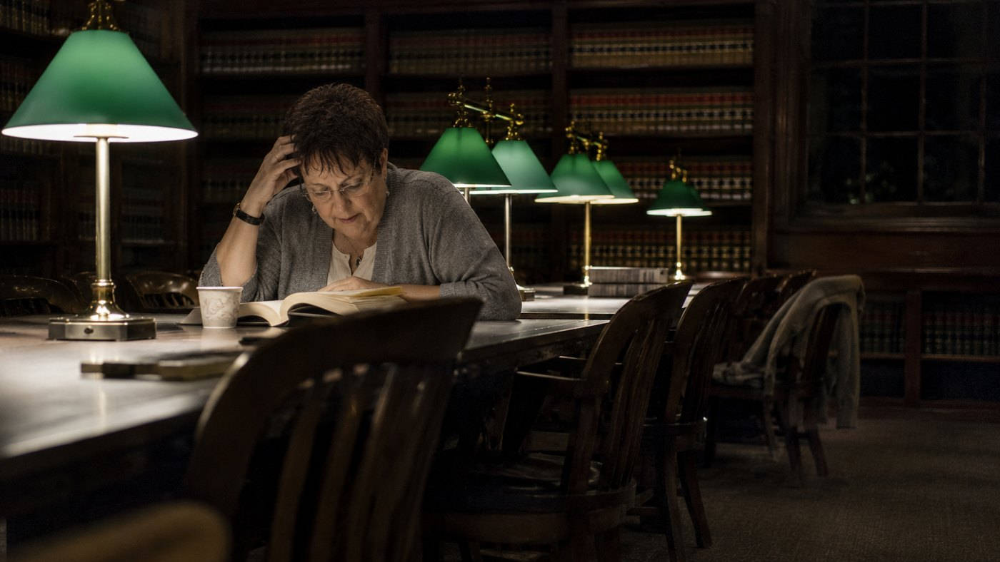
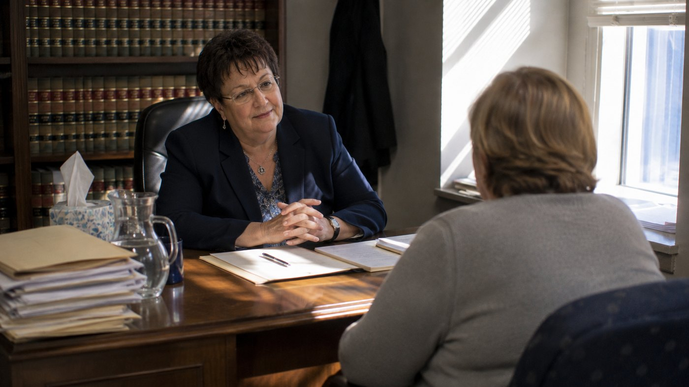
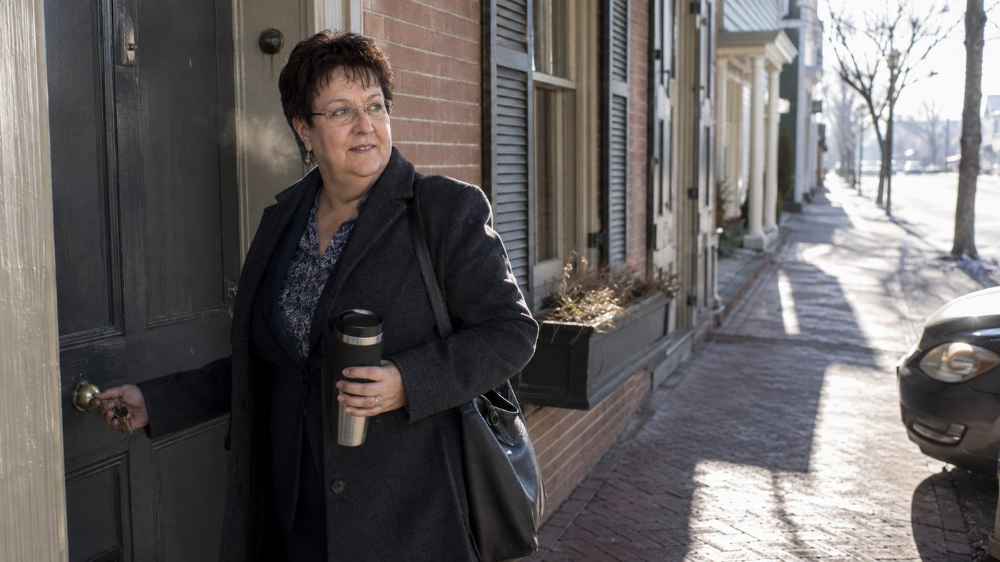

About
Kathleen M. Werner is the owner of The Dorsey Law Firm in Leonardtown, Maryland, a personal injury practice handling auto accident and workers' compensation matters. She took ownership of the firm in 2024, more than three decades after she first walked through its door.
She earned a Bachelor of Arts in American Studies and Political Science at Mary Washington College, now the University of Mary Washington, with academic distinctions and scholarships, and interned for Senator Paul Sarbanes in 1984. Her Juris Doctorate came from the University of Baltimore School of Law in 1989. She joined The Dorsey Law Firm as a law clerk in 1991, became an associate the following year, made partner in 2003, and bought the firm in 2024.
She credits her resilience and adaptability to growing up in a Navy family, and the discipline that came with it to the path she has taken since. She is a member of the Maryland State Bar Association and the Maryland Association for Justice, and has served as a trustee of the Client Protection Fund of the Bar of Maryland since 2018.
The practiceThe collision is over in seconds. What follows runs for months, against an insurer who does this every day and a client who has never done it before.
An injury at work puts the wage and the treatment and the job itself in question at the same time. The claim has to hold all three.
Practising in the same community she serves on boards in. The courthouse, the adjusters and the roads in the file are all ones she knows.
The same lawyer from the first call to the last cheque. In a firm this size that is the default rather than a promise that needs making.
Maryland's Top 100 Women, The Daily Record, 2020
Pinnacle Professional Member, The Inner Circle, 2026
Trustee, Client Protection Fund of the Bar of Maryland, since 2018
Maryland State Bar Association and Maryland Association for Justice
Beyond the firm: president of the St. Mary's Animal Welfare League, president of the St. Mary's County League of Women Voters, and a member of the St. Mary's County Adult Public Guardianship Review Board.
Read it in order. Every step below happened at the same firm, except the two that got her there.
Office of Senator Paul Sarbanes · 1984
Before the law degree, a season inside the machinery of it. The first look at how rules get made rather than just applied.

University of Baltimore School of Law · 1989
After a Bachelor of Arts in American Studies and Political Science at Mary Washington College, taken with distinctions and scholarships.
The Dorsey Law Firm · 1991 to 1992
The beginning of everything that follows. Hired as a clerk in 1991 and admitted to the firm as an associate the year after.

The Dorsey Law Firm · 2003
Eleven years from clerk to partner, and then two decades carrying the practice alongside the man whose name it still bears.

The Dorsey Law Firm · 2024 to present
Taking on the firm she had spent her whole career in. Looking ahead, the aim she states is continued growth for the practice without losing what it was.
Owner, The Dorsey Law Firm, P.C.
Enquiries go through The Dorsey Law Firm directly, which is the correct route for anything about a case.
© 2026 Kathleen M. Werner. Biographical detail on this page is drawn from her Inner Circle recognition of June 2026 and the public listings of The Dorsey Law Firm. No statistics, awards, quotations or affiliations appear here that are not stated there. Photography is illustrative. Nothing on this page is legal advice, and no attorney client relationship is created by reading it.